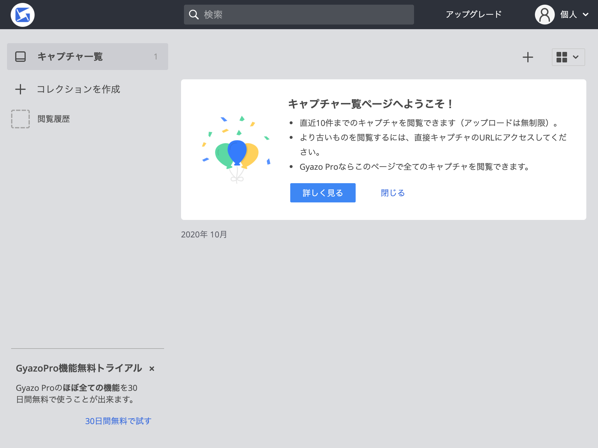
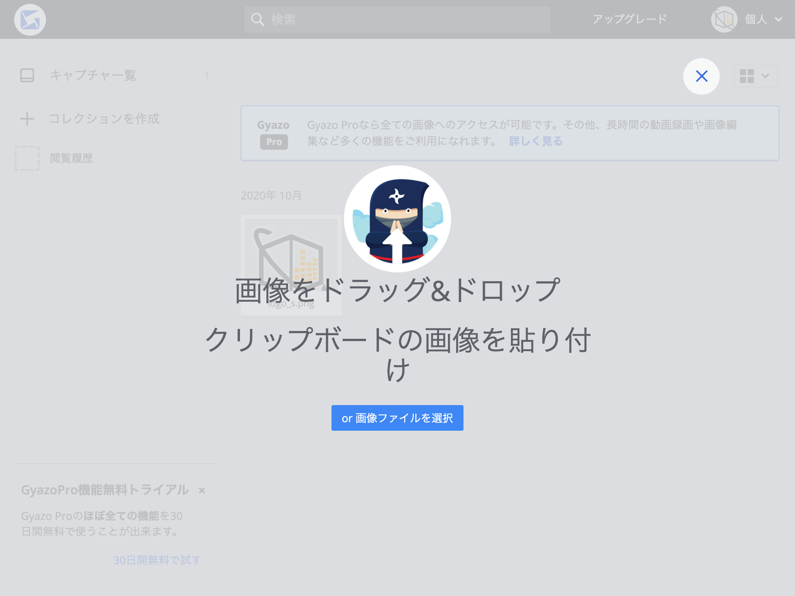
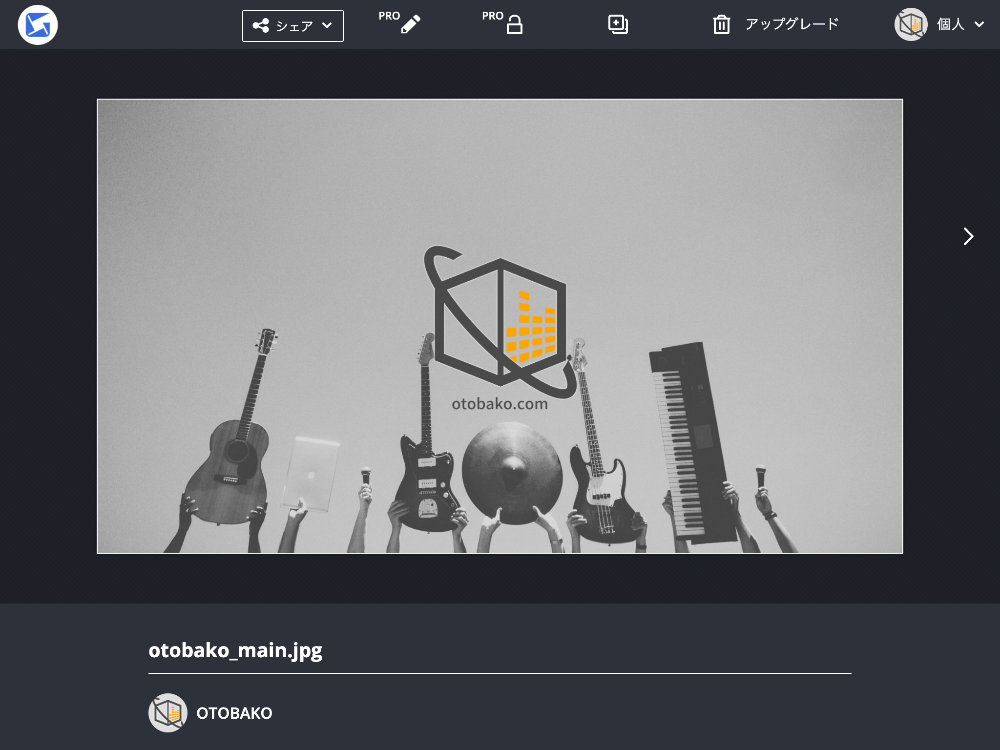
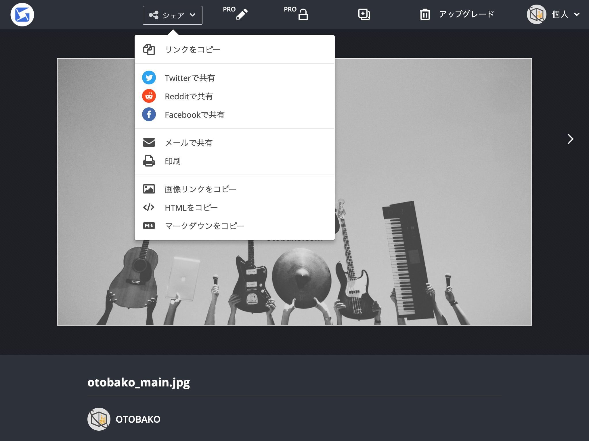
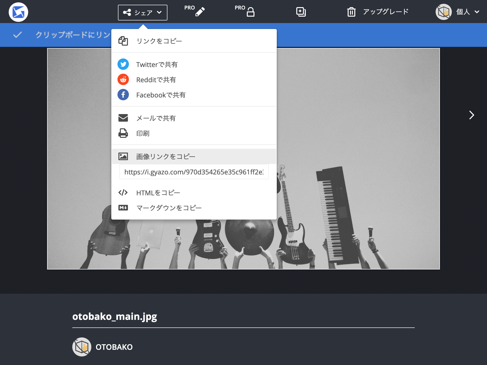
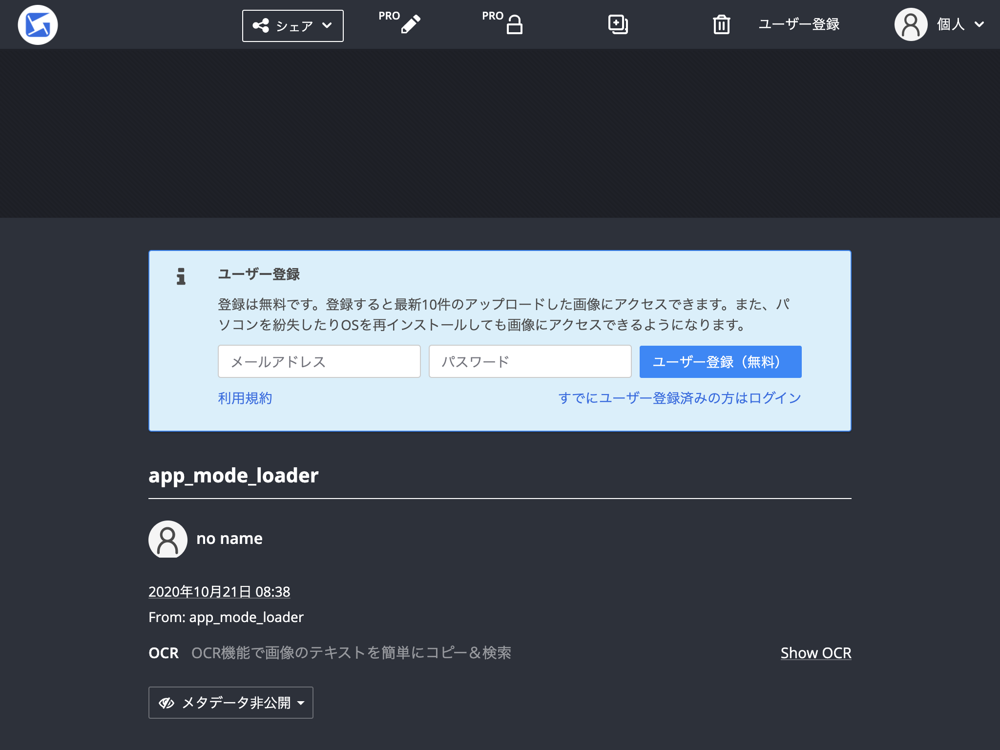

画像アップロードサービスを利用する¶
音箱のブロック型エディタは、画像アップロードに対応しておりません。そのため、あらかじめインターネット上でアクセスできる場所に画像をアップロードする必要があります。
ここでは Gyazo というサービスを使って音箱のブロック型エディタに画像を貼る方法を説明します。
Gyazo のWebサイト: https://gyazo.com/
注意事項
Gyazo は音箱サービスとは無関係のWebサービスです。ご利用は自己責任にてお願いいたします。Gyazo の利用に伴い利用者に生じた損害または不利益について、運営者は一切の責任を負いません。
画像をアップロードする¶
Gyazo にログインして、キャプチャ一覧画面にアクセスします。

右上あたりにある ＋ をクリックすると、アップロード画面が表示されます。

アップロードしたい画像をドラッグ＆ドロップ、または、選択ボタンから選択してください。アップロードが完了すると、アップロードした画像の画面に切り替わります。

ブロック型エディタに追加する¶
アップロードした画像の画面には、シェアするためのメニューが用意されています。

この中にある 画像リンクをコピー をクリックしてください。

クリックするだけでURLがコピーされます。もしコピーされていない場合は、URLの部分を選択してコピーしてください。
次のようなURLがコピーできていると思います。
https://i.gyazo.com/xxxランダムな英数字xxx.jpg
このURLを音箱サービスのブロック型エディタに貼り付けます。

Tip
Gyazo のWebサイトには、新規ユーザー登録の画面が見当たりません。アプリをダウンロードして、なにかしらアップロードすると、アップロード後の画面にユーザー登録のフォームが表示されます。
